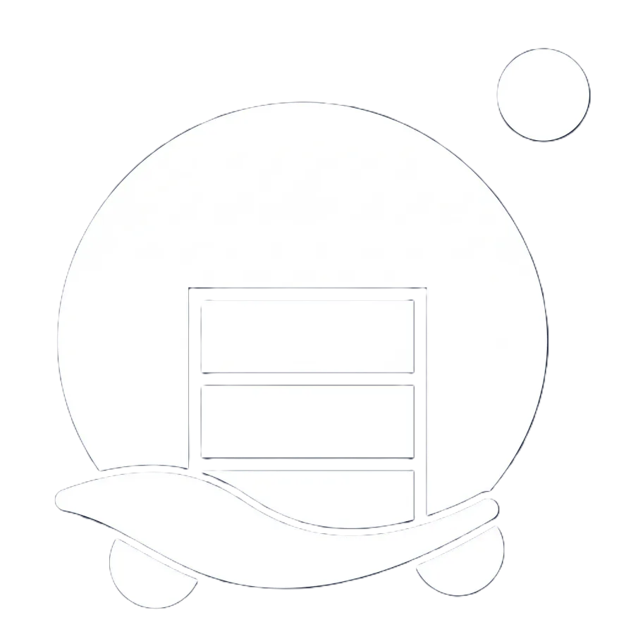
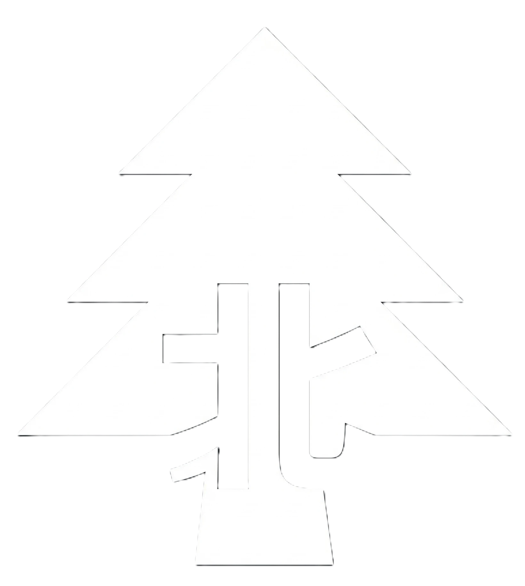
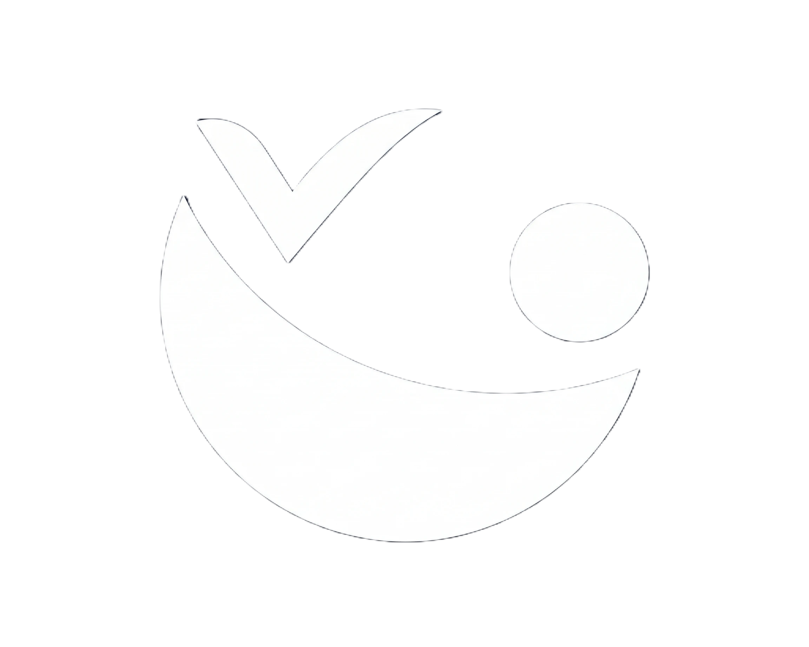
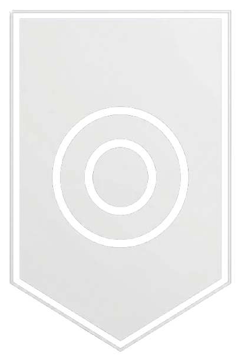

효빈광역시
기초자치단체 청사
|
||||
| [ 접기 ] | ||||
| 자치구 | ||||
 중구 중구
|
동구
|
 서구 |
 남구 남구
|
 북구 |
| 자치구 | 자치군 | |||
 청엽구 청엽구
|
 안천구 |
 창전구 창전구
|
 탄성군 |
|
| 지방자치 | ||||
|---|---|---|---|---|
|
치안
소방
|
||||
| 교육/보건 | ||||
|
우정
세무
|


- 1. 개요
- 2. 관할 구역 및 특징
- 2.1. 효빈 4대 도심, 청엽지구
- 2.2. 새로운 희망, 효빈동신도시
- 3. 정치: 권상남 구청장과 민주당의 텃밭
- 4. 관광: "빵을 굽는 향기가 거리마다 배어있는 도시"
- 4.1. 애프터글로우 성지순례 (아오바 모카)
- 4.2. 마이고 성지순례 (아논타워, 등동)
- 5. 교통: 청엽구청역
- 6. 여담: 윤대환 빵 테러 사건
- 7. 관련 문서
1. 개요
효빈광역시 청엽구의 행정과 민원 업무를 총괄하는 기초자치단체 청사. 청엽로 51(청엽5동)에 위치해 있다.
청엽구는 2020년 전까지만 해도 효빈시에서 가장 인구가 많은 지역이었으며(현재는 북구에 이어 2위), 효빈의 4대 도심 중 하나인 청엽지구를 관할하는 거대 구청이다.
특히 청엽구청은 이름인 '청엽(靑葉)'을 필두로 구역 내 수많은 지명들이 일본의 서브컬처 프로젝트 BanG Dream!(특히 Afterglow와 MyGO!!!!!)의 캐릭터명과 한자까지 완벽하게 겹친다는 점을 적극 활용하여, 대한민국에서 가장 독보적이고 힙한 '서브컬처 관광 행정'을 펼치는 곳으로 명성이 자자하다.
2. 관할 구역 및 특징
2.1. 효빈 4대 도심, 청엽지구
구청이 위치한 청엽동(1~6동) 일대는 롯데백화점 청엽점과 각종 대형 상업시설, 그리고 학원가가 밀집한 핵심 도심이다. 1980년대 이후 덕현지구의 뒤를 이어 대규모로 개발된 지역이라 아파트 단지와 인프라가 잘 갖춰져 있으며, 쾌적한 베드타운의 역할을 톡톡히 하고 있다.
특히 청엽동에는 55층 주상복합인 아논타워가 랜드마크로 우뚝 서 있어 1020 세대의 패션과 쇼핑 메카로 불린다.
2.2. 새로운 희망, 효빈동신도시
구청 관할의 남부 외곽 지역인 입동, 언동(현재 효빈동으로 개칭) 일대는 과거 미개발지로 슬럼화가 진행되던 곳이었으나, 최근 효빈동신도시로 재탄생하며 청엽구의 새로운 인구 유입 동력원으로 각광받고 있다.
3. 정치: 권상남 구청장과 민주당의 텃밭
현재 청엽구청장은 더불어민주당 소속의 권상남 구청장(재선)이다. 청엽구는 인구가 많고 2030 세대 및 학부모 세대가 다수 거주하여 민주당계 정당의 지지세가 매우 강한 지역이다. 실제로 구의회 21석 중 민주당 20석, 조국혁신당 1석으로 보수정당은 단 한 석도 얻지 못했다.
4. 관광: "빵을 굽는 향기가 거리마다 배어있는 도시"
청엽구청 행정의 가장 큰 특징은 구역 전체가 거대한 2.5차원 테마파크처럼 돌아간다는 점이다. 우연히 겹친 캐릭터 이름을 '베이커리노믹스'와 '관광 상품'으로 완벽하게 연성해냈다.
4.1. 애프터글로우 성지순례 (아오바 모카)
청엽구(靑葉區)의 한자가 Afterglow의 기타리스트 아오바 모카(青葉モカ)의 성씨와 일치한다. 청엽구청역에서 청엽역으로 이어지는 1.5km 구간은 아예 '청엽 베이커리 거리'로 지정되어 있으며, 전국의 유명 제빵사들이 모여들어 '초코 소라빵'과 '메론빵'을 구워낸다. 매년 9월 모카의 생일 주간에는 청엽구청 앞 광장에서 '청엽 브레드 페스티벌'이 열린다. 이 동네 빵집들은 전국 평균 매출의 3배를 벌어들인다.
4.2. 마이고 성지순례 (아논타워, 등동)
아논타워: 청엽동의 55층 랜드마크. 원래 '청엽 센트럴 타워'였으나 구청과 협의 끝에 MyGO!!!!!의 치하야 아논의 이름을 따 '아논타워'로 개명하는 정신 나간(...) 결정을 내렸고 결과는 대성공이었다. 최상층 방명록인 '아논 노트'에 소원을 적으면 관종력이 상승한다는 속설이 있다.
등동(燈洞): '등불'이라는 뜻이 타카마츠 토모리(Tomori)와 일치해, 등동 뒷산 전망대는 별을 보며 덕질을 하는 낭만적인 포토존이 되었다.
5. 교통: 청엽구청역
구청 바로 인근에는 1호선과 3호선이 교차하는 청엽구청역이 있다. 지하 2층에는 효빈교통공사 공식 굿즈샵이 있어 성지순례객들이 빵을 사기 전에 반드시 들르는 관문이다.
| 대중교통 구분 | 정류소명 / 역명 | 노선 번호 및 노선명 |
|---|---|---|
| 시내버스 | 청엽구청역 |
급행06 간선16, 17, 88, 89 지선141, 154, 162, 181, 692, 881, 891, 892 순환80 광역1000, 6000 |
| 도시철도 | 청엽구청역 |
1호선
3호선
청엽지구의 핵심 환승 거점. 역명 자체가 아오바(靑葉)의 성지로 통하며, 역 내에 '모카의 빵 나눔 냉장고'가 설치되어 있는 유쾌한 곳이다. |
6. 여담 및 사건 사고
- 2017년 윤대환의 '빵 테러' 굴욕 사건: 고립주의자이자 전 효빈시장인 윤대환이 징역을 살고 출소한 직후, 청엽역 환승 구역에서 '빵지순례'를 하던 모카 팬들에게 "도시 인프라를 빵 쪼가리로 더럽힌다!"고 시비를 걸었다가, 분노한 팬들이 던진 모카빵과 메론빵에 두들겨 맞고 현장에서 비참하게 도주한 전설적인 사건이 청엽구청 관할 내에서 벌어졌다.
빵을 무기로 쓰는 오타쿠들의 승리.이후 청엽역 앞에는 이를 기념하는 '평화의 빵' 조형물이 세워졌다. - 효빈대 에브리타임에서는 이 사건을 두고 "청엽은 '푸른 잎(靑葉)'처럼 새로운 시작을 상징하는데, 윤대환은 영원히 썩은 뿌리에 머물 것"이라며 대차게 조롱했다.
- 지명의 유래가 '푸른 잎'임에도 불구하고, 청엽구 어르신들은 빵집 거리가 하도 성행하다 보니 "옛날에 빵을 아주 좋아하는 선녀가 살아서 청엽동이다"라고 모카 전설(?)을 각색해서 썰을 풀고 다닌다.